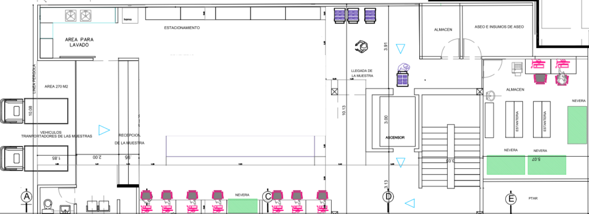

Proyecto de Automatizaciòn e implementaciòn de soluciones diagnósticas
| Ubicación | Plataforma / Equipo | Configuración | Cantidad |
|---|---|---|---|
| Recepción y Pre-Analítica Descentralizada | |||
| Piso 1 | cobas p612 / BLIM / p471 | Clasificación, alicuotado y preparación | 1 Línea Integrada |
| Core Lab Automatizado (Química e Inmunoquímica) | |||
| Piso 3 | cobas pro | ISE Neo - c703 - e801 | 2 Líneas |
| Piso 3 | cobas pro | ISE Neo - c503 - c503 - e801 | 1 Línea |
| Hematología Integral | |||
| Piso 3 | Sysmex XN 9100-301 | XN + RU20 | 1 Línea |
| Automatización Total (TLA) y Archivo | |||
| Piso 3 | cobas 8100 | Soluciòn modular de automatizaciòn | 1 Pista Central |
| Piso 3 | cobas p701 | Almacenamiento automatizado con cadena de frío | 1 Módulo |
Visión macro de todos los frentes integrados (Puedes hacer scroll horizontal).
Estructura de Desglose de Trabajo consolidada por hitos y tareas principales.
| Código | Fase / Tarea del Proyecto LIS | Inicio | Fin |
|---|---|---|---|
| 1.1 | PLANIFICACIÓN Y GESTIÓN INICIAL | 01/10/26 | 02/10/26 |
| 1.1.1 | Reunión de inicio (Kick-off) y Gobernanza | 01/10/26 | 01/10/26 |
| 1.1.2 | Aprobación de cronograma y línea base | 02/10/26 | 02/10/26 |
| 1.2 | LEVANTAMIENTO DE INFORMACIÓN Y MAESTROS | 05/10/26 | 06/01/27 |
| 1.2.1 | Mapeo de datos y personalizaciones | 05/10/26 | 26/10/26 |
| 1.2.2 | Inventario de Analizadores y Protocolos | 27/10/26 | 03/11/26 |
| 1.2.5 | Migración de Datos Históricos (Un año) | 13/11/26 | 20/11/26 |
| 1.2.7 | Validación de Maestros de Laboratorio (CUPS, Deltas) | 30/11/26 | 06/01/27 |
| 1.3 y 1.4 | DESARROLLO WEB-BI Y PERSONALIZACIONES | 07/01/27 | 11/02/27 |
| 1.3.1 | Desarrollo API/REST e Integración Web-BI | 07/01/27 | 14/01/27 |
| 1.4.2 | Codificación de reglas y workflows personalizados | 15/01/27 | 04/02/27 |
| 1.5 | INTEGRACIÓN HIS Y DRIVERS DE ANALIZADORES | 07/01/27 | 22/02/27 |
| 1.5.2 | Configuración interfaces de analizadores | 08/01/27 | 29/01/27 |
| 1.5.3 | Mensajería HIS-LIS (Ingreso HL7 ORM) | 22/01/27 | 11/02/27 |
| 1.5.4 | Retorno de resultados LIS-HIS (HL7 ORU) | 12/02/27 | 22/02/27 |
| 1.7 | PRUEBAS DE CALIDAD E INTEGRACIÓN GLOBAL (QA) | 15/02/27 | 15/04/27 |
| 1.7.1 | Pruebas de integración con HIS | 15/02/27 | 19/02/27 |
| 1.7.2 | Pruebas masivas con Analizadores y Módulos LIS | 22/02/27 | 31/03/27 |
| 1.7.6 | Certificación Global de Calidad (Pase a Producción) | 15/04/27 | 15/04/27 |
| 1.8 | PILOTO EN SEDES DE TOMA DE MUESTRAS | 16/04/27 | 21/05/27 |
| 1.8.1 | Despliegue y atención pacientes reales (Go-Live Piloto) | 16/04/27 | 27/04/27 |
| 1.8.4 | Certificación del Piloto (KPIs superados) | 21/05/27 | 21/05/27 |
| 1.9 | DESPLIEGUE GRADUAL RED COMPENSAR (ROLLOUT) | 24/05/27 | 16/07/27 |
| 1.9.1 | Rollout Bloque Sabana y Regionales | 24/05/27 | 04/06/27 |
| 1.9.2 | Rollout Bloque Bogotá Sur y Occidente | 07/06/27 | 18/06/27 |
| 1.9.3 | Rollout Bloque Bogotá Norte y Red Aliada | 21/06/27 | 02/07/27 |
| 1.9.4 | Rollout Bloque Calle 26 y Laboratorio Central (CPL) | 05/07/27 | 16/07/27 |
| 1.10 | ESTABILIZACIÓN Y CIERRE DE PROYECTO | 19/07/27 | 03/08/27 |
| 1.10.1 | Soporte Hypercare 24/7 y Medición KPIs | 19/07/27 | 30/07/27 |
| 1.10.2 | Firma acta de cierre y entrega a operación (BAU) | 02/08/27 | 02/08/27 |
